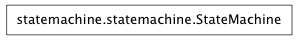

The meta-class for State. Since State classes as used, some operations on those classes are defined here.
A State class represents the current state of a StateMachine.
States have:-
Format a/an depending on the state.
A dictionary of State Transitions {NewState: transition_method}.
Move machine to newState:
A StateException is raised when an operation is attempted on a StateMachine when it is in an inappropriate State.
A StateMachine is an object that can be in one of a number of different State‘s’.
Setting the state checks whether the transition is allowed and moves the StateMachine into the new state - performing any required processing on the transition. A StateError is raised if the transition is not allowed.
Raise a StateError if StateMachine is not in State (a class, or a list of State classes).
message is passed with the exception. It can contain “a{n} {state}”” which will be replaced by the current state.
Return True if machine can moveTo stateName.
Return a named label for a state transition. (Only applicable if the transition has an associated method).
Transition to the newState state (a class).
Return True is machine is in State (a class, or a list of State classes).
Return a description for a State Transition.
Called after machine moves from oldSate to newState.
Return the edges for a graph (graphviz format) documenting all State Transitions.